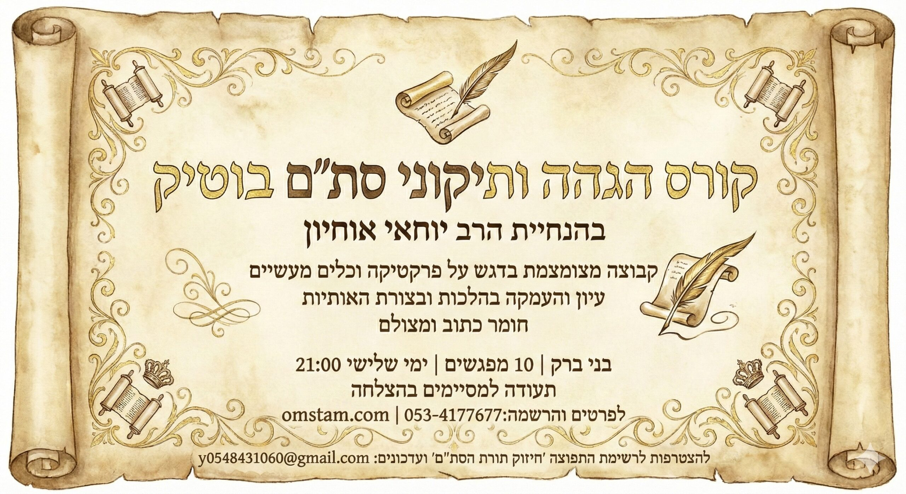

האם מותר לכתוב בקולמוס ברזל או נירוסטה?
פורסם בתאריך 24 בנובמבר 2023 · עודכן 8 במרץ 2026 · מאת הרב יוחאי אוחיון

האם מותר לכתוב בקולמוס ברזל או נירוסטה?
שלח הודעה עכשיו לכתובת Y0548431060@GMAIL.COM
ומהו הקולמוס המומלץ לסופר סת"ם?
נשאלתי האם אפשר לכתוב בקולמוס ברזל או נירוסטה,
והאם יש עדיפות לקולמוס קרמי וכדומה,
ומהו הקולמוס הראוי והמהודר לכתיבת סת"ם.
נבאר את הדברים בקצרה ובבהירות.
'זה אלי ואנוהו' – גם בקולמוס
דרשו חכמים על הפסוק 'זה אלי ואנוהו' – התנאה לפניו במצוות.
ספר תורה נאה, דיו נאה, וקולמוס נאה.
הקולמוס איננו כלי טכני בלבד. הוא חלק מההידור, והוא משפיע על צורת האות, היציבות והדיוק.
הקולמוסים המצויים כיום
קולמוס קנה
קולמוס נוצה
ברזל ונירוסטה
פלסטיק
קולמוס קרמי (זרקוניה)
קולמוס קנה – הדרך הקדומה
בחז"ל נאמר: 'זכה קנה ליטול הימנו קולמוס לכתוב בו ספר תורה'.
כך נהגו בעיקר בארצות ספרד.
המעלה: גמישות טבעית ויכולת כתיבה ציורית.
החסרון: דורש תחזוקה והכנה תדירה.
בני אשכנז עברו לכתיבה בנוצה משום שלא היו מצויים אצלם קנים חזקים דיים.
נוצה וברזל – חשש חקיקה
יש שהחמירו בברזל מחשש חקיקה או מטעם שהברזל מקצר ימים והתורה מארכת.
המנהג בדור הקודם בבני אשכנז – כתיבה בנוצה.
בני ספרד נהגו בעבר לכתוב בקנה.
אך כיום רוב ככל הסופרים אינם כותבים בקנה או בנוצה, כיון שיש תחליפים טובים וקלים יותר.
רוצים לקבל עיונים נוספים בהלכות כתיבה, דיו, קולמוסים ומסורת הכתב הספרדי?
ניתן להצטרף לרשימת התפוצה ולקבל עדכונים שוטפים.
קולמוס פלסטיק
יתרונות:
• זול (8–12 ש"ח)
• קל לכיוון זוית
• גמיש ונוח לתלמידים בתחילת הדרך
חסרון: נשחק במהירות ודורש חידוד תדיר.
קולמוס קרמי (זרקוניה)
יתרונות:
• אינו נשחק
• אינו דורש חידוד
• כתיבה יציבה
חסרונות:
• שביר בנפילה
• דורש הסתגלות מרובה
מחיר: 120–900 ש"ח.
קולמוס נירוסטה
יתרונות:
• כמו בקרמי
יש שדימו אותו לברזל, אולם יש פוסקים שכתבו שנירוסטה אינה בגדר ברזל ממש ופנים חדשות באו לכאן, ובפרט כאשר הכתיבה מהודרת יותר.
מחיר: 100–350 ש"ח.
מה הדין למעשה?
הקנה הוא המהודר ביותר, אך כיום שלא נהגו רוב הסופרים בכתיבה בקנה אין מעלה מוחלטת מצד הדין באחד מהם על פני חברו – העיקר הוא איכות הכתיבה והדיוק ההלכתי.
📜 להצטרפות לרשימת התפוצה ולקבלת מאמרים מקצועיים בתורת הסת"ם:
שלחו בקשה למייל:
y0548431060@gmail.com
בברכת התורה,
יוחאי אוחיון – מלמד סופרים בכתב הספרדי
